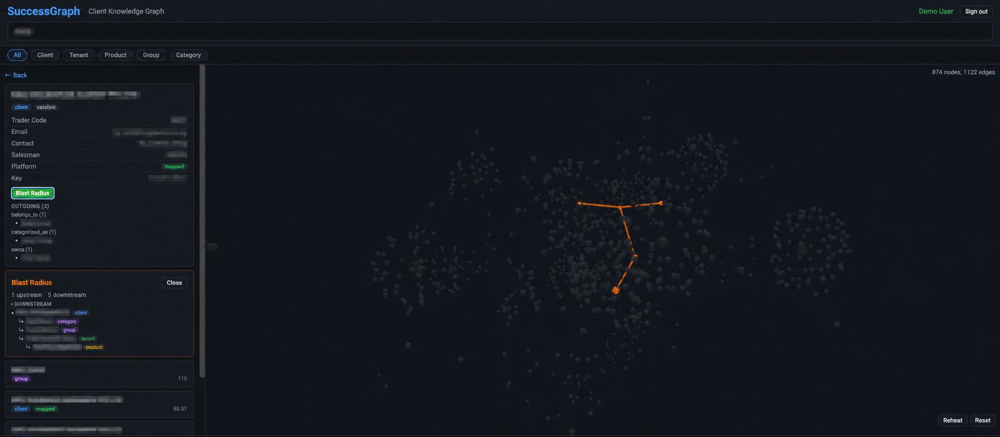
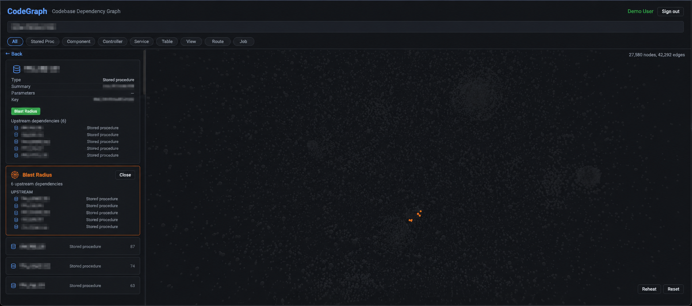

Customer conversations
Issues arrive in natural, incomplete language.
Issues arrive in natural, incomplete language.
Customer context, tickets and tracked handoffs.
Product routing, investigation and proposed changes.
PA, communication and finance-specific processes.
Fix the reusable workflow when an agent cannot help.
SuccessGraph is the customer map: it links companies, products, subscriptions and the correct support route.
reademail · createticket · readticket · updateticket · zach_group_permissions · zach_github_issue_flow · zach_engineering_delegate
The agent chooses a registered tool. The workflow graph controls what executable path can run and what evidence must be stored.
zach-workflows.sqlite
zach-workflow-runs.jsonl
state.sqlite + approval queueFast loops move work. Slow loops detect drift, improve knowledge and keep state bounded.
CodeGraph maps software dependencies. A DB is the product database. A PR is a proposed code change awaiting human review.
insa_product_lane · insa_codegraph · insa_db_diagnostic · insa_investigation_flow · insa_readiness_gate · insa_pr_package · insa_coding_delegate
Maps components, services, APIs, procedures, tables and reports across products.
find · search · context
flow · table · blast
upstream · downstream
diff · clustersResolves the database from a company code and records the business reason.
tenants · tenant-info
schema · diagnose
query (read-only)
user lookup / unlock-planProduct playbooks constrain investigation order, SQL safety, UI tracing and release readiness.
investigate-start
workflow-readiness
quality-gate
fix-ready
record-build-artifactClean worktree, safe GitHub commands, verified PR evidence and optional ACP coding delegation.
ensure-clean-worktree
safe-gh pr create
done-ready
Codex / Claude ACP
Discord artifact deliveryDiscord-routed finance agent with SuccessBooks workflow tools, local state and accounting controls.
expense entry · duplicate gate · invoice flow · month-end review · billing trackerFinance requests are classified, sourced and stored in the SICS Accounting knowledge structure; operational tooling remains available for controlled finance work.
source → classify → duplicate check → dry run → preview → Jensen approval → record

Fallback if a live dependency is unavailable: narrate the same checkpoints using the redacted evidence shown above.
Questions?